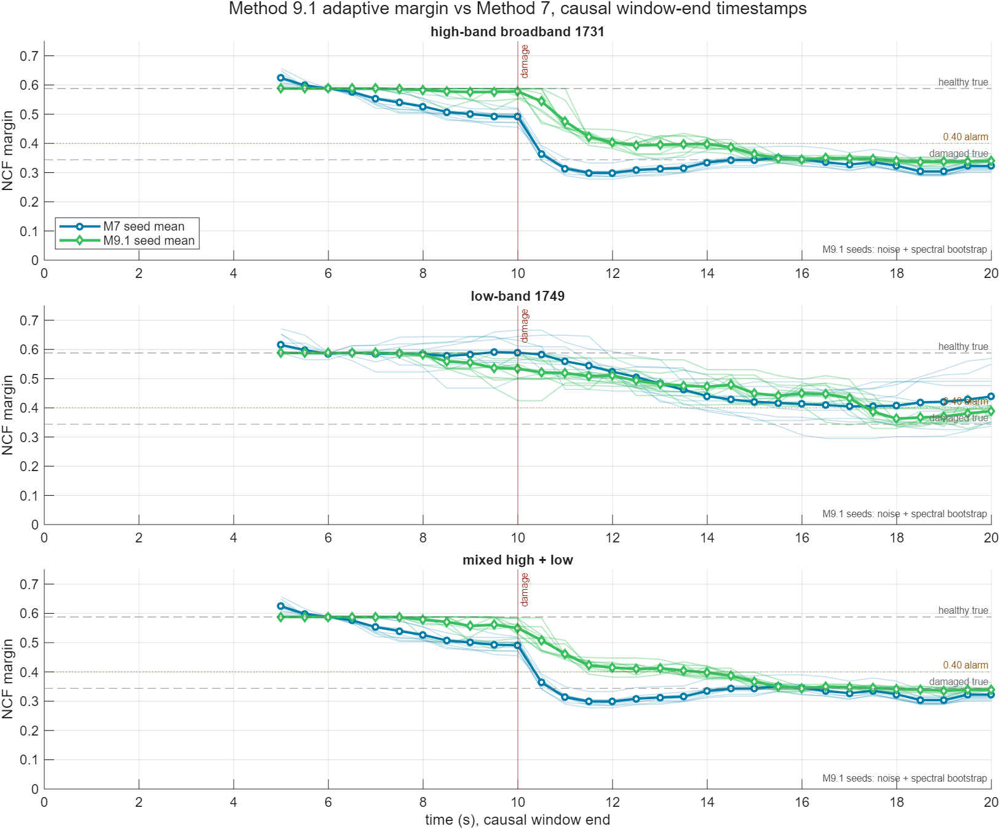

Method 9.1 adaptive margin
M9.1 uses only branch 2 and branch 3: a complex closed-loop FRF where the command excites the loop, plus residual output growth for output-only evidence. All plotted and reported times are causal window-end times. Branch 1 is ignored.
Input-excited band
Use branch 2 when \(dd_{\mathrm{lead}}\) has enough power and coherence is acceptable. The estimator reads the command-correlated transfer and converts the complex \(S,T\) pair into an NCF distance.
Residual branch
Use branch 3 for output-only evidence. The normal path searches input-quiet bins; a frequency-matched early-warning path may scan the full band when the direct S,T branch is already moving at the same frequency.
Notation
Let \(u=dd_{\mathrm{lead}}\), \(y=dm\), \(d\) be internal disturbance or noise, \(H\) be the plant path from command force/displacement action to measured displacement, and \(C\) be the controller.
The measured output is the sum of a command-correlated part and an internally excited part:
Here \(\Phi_{ab}\) means the cross-spectrum between signals \(a\) and \(b\), and \(\Phi_{aa}\) is the autospectrum of \(a\).
Branch 2: input-excited band
Step 1: require identifiable input power
M9.1 only trusts branch 2 on bins where the input has enough power and the estimated input-output relation is coherent:
Step 2: estimate the command-correlated transfer
Using the output equation, the cross-spectrum with the command is:
If the internal disturbance is not correlated with the command, \(\Phi_{du}\approx0\). Then:
Step 3: convert \(S,T\) into margin
For unity feedback, \(S=1-T\). The NCF loop distance at one frequency can be written directly from \(S,T\):
M9.1 uses the largest distance over qualified excited/coherent bins:
A small finite-window correction sharpens sub-nominal branch-2 margins while leaving the healthy nominal point anchored:
This branch is the phase-aware branch. If the dangerous frequency is externally excited, it can detect margin loss caused by phase delay even before a large output-only resonance is visible.
Branch 3: residual output evidence
Step 1: decompose the output spectrum
When \(u\) and \(d\) are approximately uncorrelated, the total output spectrum is:
Step 2: use coherence to remove the command-correlated part
The residual output spectrum is approximated as:
Step 3: search residual growth
Branch 3 compares the current residual spectrum with the healthy reference spectrum. The normal fallback searches outside the branch-2 excited/coherent bins:
Then it maps the residual growth to a conservative margin proxy:
For faster damage-reduction detection, M9.1 also checks a full-band residual candidate. It is accepted only when it binds within 4.0 Hz of the direct S,T branch and S,T has already moved below nominal but not below the relative alarm level. In that case the residual candidate is bounded below by 80% of the direct S,T margin.
Why this sees what branch 2 can miss
If a mode grows from internal disturbance or noise, then the residual spectrum contains:
So branch 3 can catch output-only resonance growth when the command has almost no power at that frequency, and the bounded early-warning path can also catch the first residual growth at an already-observed S,T frequency:
Final branch selection
M9.1 computes no known-mode peak/floor branch. Each window keeps only the lower margin from branch 2 and branch 3:
This makes branch 3 the only output-only fallback. There is no branch-1 peak mask, no branch-1 calibrated proxy, and no final minimum against a branch-1 estimate.
Seed spread
M9.1 seed spread includes injected noise/disturbance variability plus a bootstrap perturbation of the spectral subsegments. It is still not a full model-uncertainty interval, but it avoids plotting a deterministic averaged estimator as if finite-window spectral uncertainty were zero.
Table comparison
| Case | M7 damaged | M7 err | M7 seeds | M9.1 damaged | M9.1 err | M9.1 seeds | M9.1 freq | M7 ms | M9.1 ms | M9.1/M7 |
|---|---|---|---|---|---|---|---|---|---|---|
| high-band | 0.329 | 0.015 | 10/10 | 0.345 | 0.001 | 10/10 | 38.0 Hz | 106 | 69 | 0.65x |
| low-band | 0.417 | 0.073 | 10/10 | 0.407 | 0.063 | 10/10 | 37.0 Hz | 89 | 63 | 0.70x |
| mixed | 0.329 | 0.015 | 10/10 | 0.346 | 0.002 | 10/10 | 38.0 Hz | 89 | 61 | 0.69x |
Seed plots

Interpretation
M9.1 improves the three-case comparison by matching M7's damage-reduction timing while preserving the direct phase-aware branch. The residual branch is normally input-quiet, with a frequency-matched early-warning path bounded by the direct S,T estimate; branch 1 is no longer computed or selected.